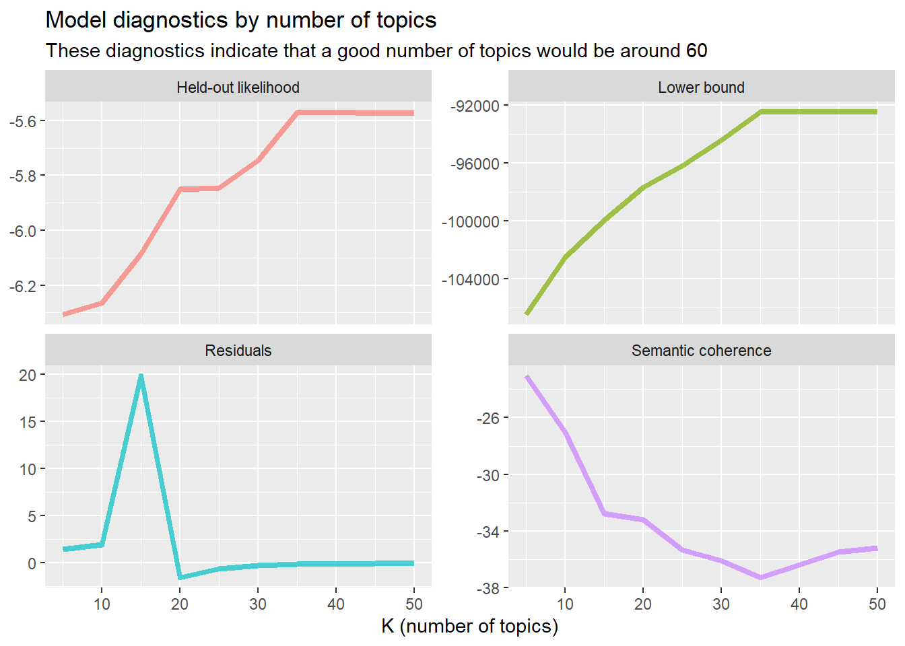
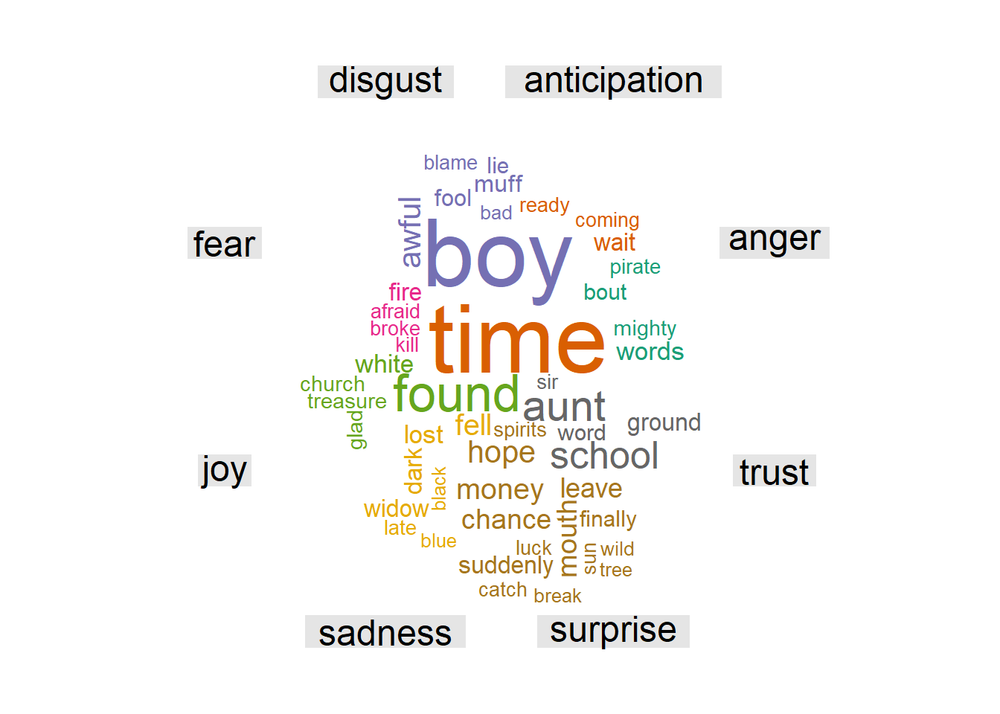
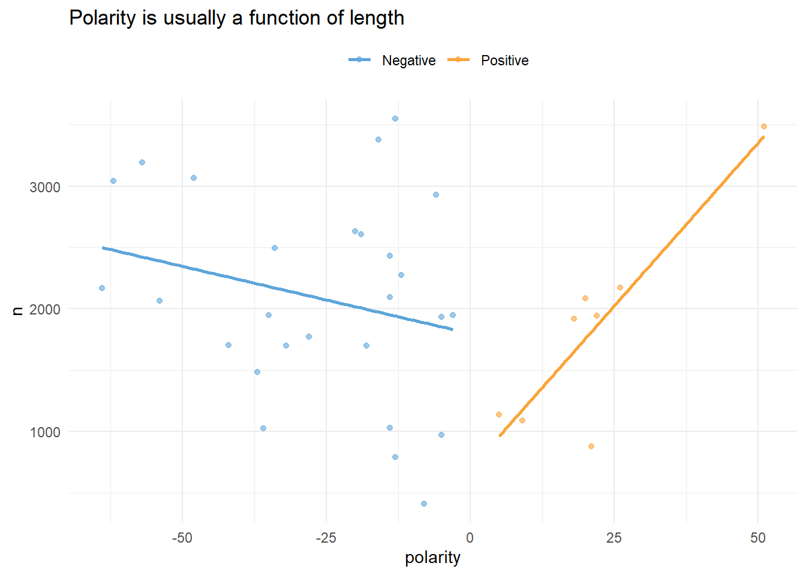
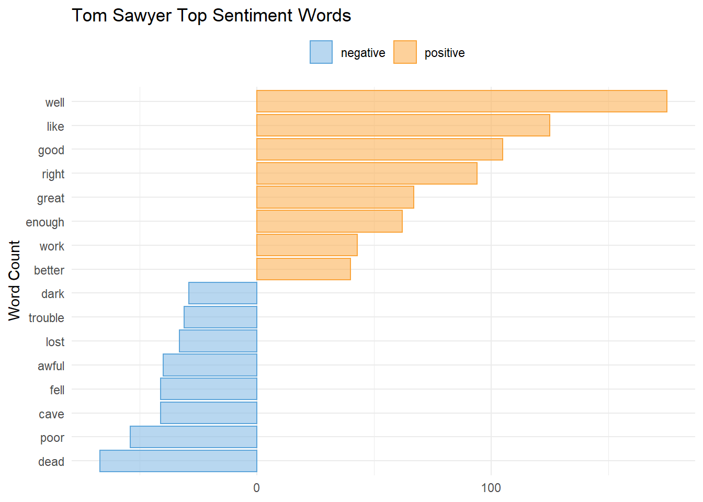
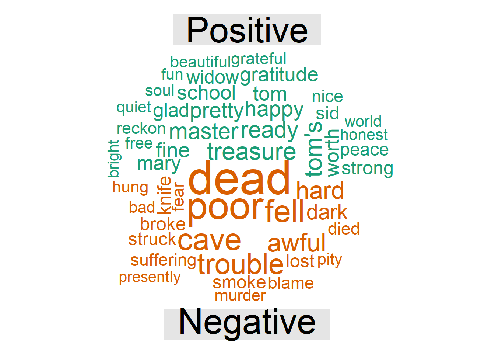
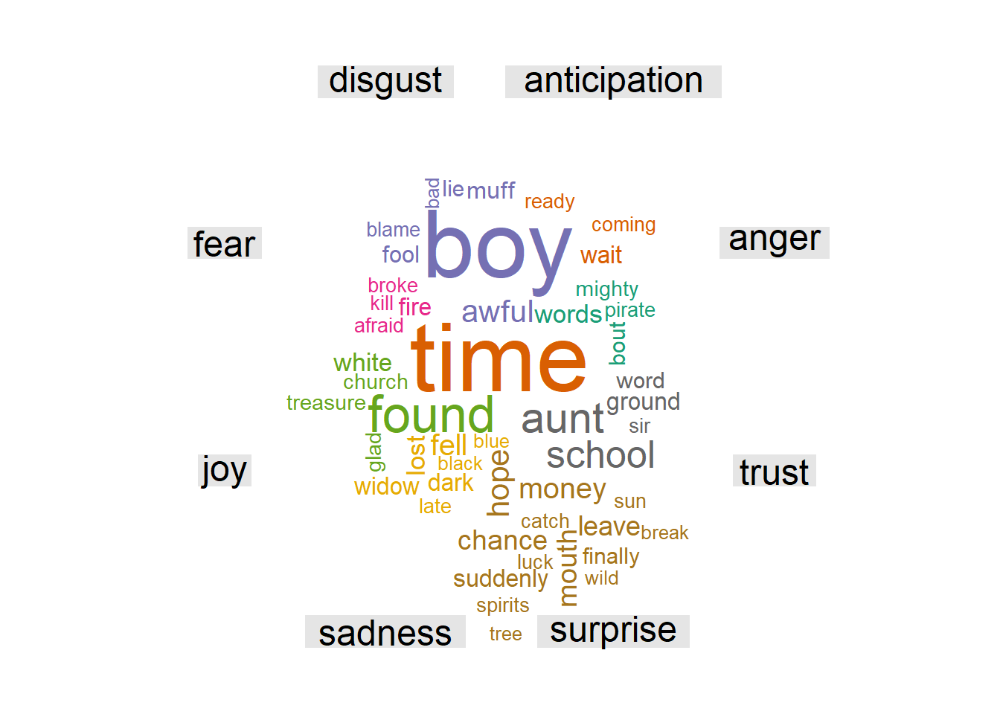
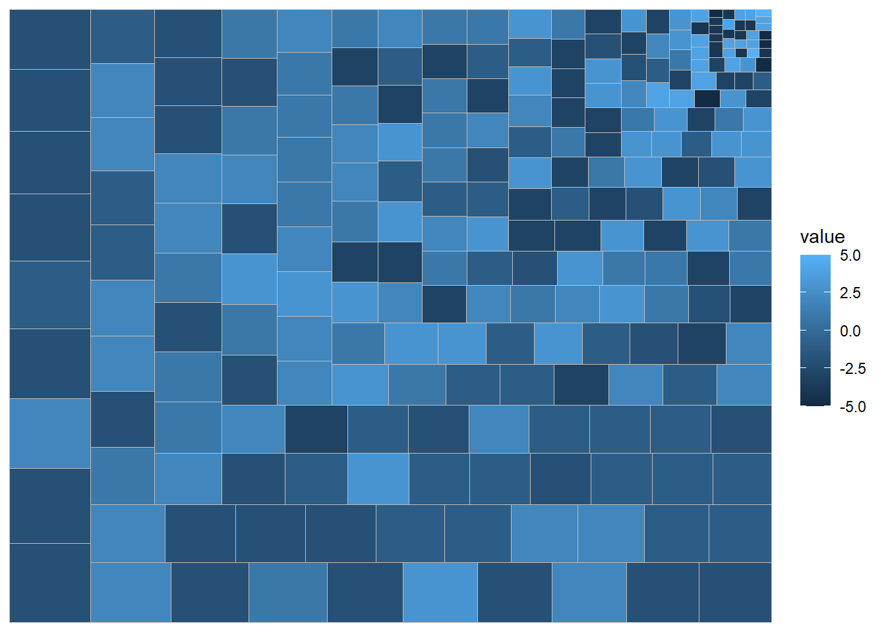
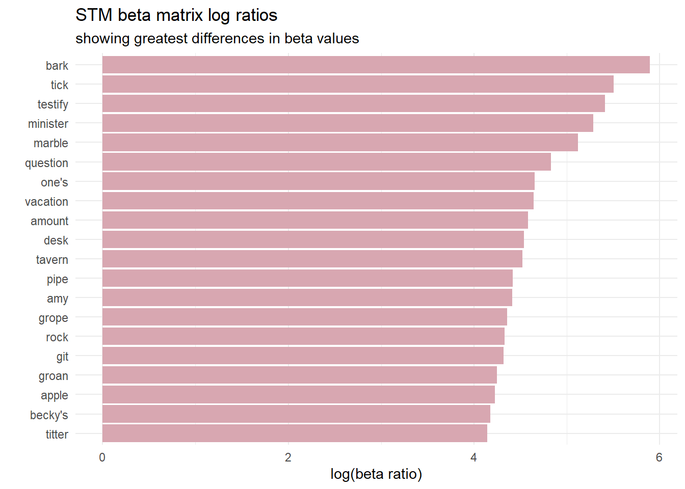

Chapter 2 Sentiment Analysis
Sentiment analysis is the extraction of the emotional intent of text. You can classify the polarity (positive | negative) or sentiment (e.g., angry, sad, or happy) at the document, sentence, or feature level.
To practice the principles with real-world data, I will use the Customer of reviews of London-based hotels data set hosted on data.world. hotel_raw contains reviews of the top 10 most- and least-expensive hotels based in London.
hotel_raw <- read_csv("https://query.data.world/s/2zsbemxf66vevuuc47jqe24n4zwl54") %>%
mutate(`Date Of Review` = lubridate::mdy(`Date Of Review`)) %>%
janitor::clean_names(case = "snake")
skimr::skim(hotel_raw)| Name | hotel_raw |
| Number of rows | 27330 |
| Number of columns | 6 |
| _______________________ | |
| Column type frequency: | |
| character | 4 |
| Date | 1 |
| numeric | 1 |
| ________________________ | |
| Group variables | None |
Variable type: character
| skim_variable | n_missing | complete_rate | min | max | empty | n_unique | whitespace |
|---|---|---|---|---|---|---|---|
| property_name | 0 | 1.00 | 9 | 62 | 0 | 20 | 0 |
| review_title | 0 | 1.00 | 1 | 508 | 0 | 22323 | 0 |
| review_text | 0 | 1.00 | 16 | 32759 | 0 | 27329 | 0 |
| location_of_the_reviewer | 3953 | 0.86 | 1 | 178 | 0 | 6624 | 0 |
Variable type: Date
| skim_variable | n_missing | complete_rate | min | max | median | n_unique |
|---|---|---|---|---|---|---|
| date_of_review | 1 | 1 | 2002-04-01 | 2018-10-18 | 2015-07-22 | 3870 |
Variable type: numeric
| skim_variable | n_missing | complete_rate | mean | sd | p0 | p25 | p50 | p75 | p100 | hist |
|---|---|---|---|---|---|---|---|---|---|---|
| review_rating | 0 | 1 | 4.49 | 0.89 | 1 | 4 | 5 | 5 | 5 | ▁▁▁▂▇ |
There are 27,330 reviews of 20 hotels ranging from 2002-04-01 to 2018-10-18.
This text is raw and needs some cleaning. One issue is that the reviews include multiple languages. I also see tags like iconv() and then removing the tags with str_replace(). For example, iconv() changes unicode character <U+0093> to string “<93>”. Then you can remove regexp "\\<[:alnum]+\\>]". (See the Regular Expressions cheat sheet at RStudio.com). That’ll remove the original tags and the unicode chars too.
hotel_raw_1 <- hotel_raw %>%
mutate(
review_text = iconv(review_text, from = "", to = "ASCII", sub = "byte"),
review_text = str_remove_all(review_text, "\\<[[:alnum:]]+\\>")
)I’ll add a review_id column for tracking. In a desperate attempt to include only English reviews, I’ll link to one of the sentiment lexicons and filter out reviews that don’t have at least two matches. The first 50 reviews have non-English text in review_id 1, 10, 24, 28, 39, and 46. My heuristic gets rid of all but #28. Close enough.
hotel_raw_2 <- hotel_raw_1 %>%
mutate(review_id = row_number())
english_id <- hotel_raw_2 %>%
unnest_tokens("word", review_text) %>%
inner_join(get_sentiments("bing"), by = "word") %>%
count(review_id) %>%
filter(n > 2)
hotel <- hotel_raw_2 %>%
semi_join(english_id, by = "review_id")That got rid of 3,751 rows. My cleansed data set hotel has 23,579 rows.
2.1 Data Formats
There are five common text mining packages, each with their own format requirements. Whichever package you work in, there is a decent chance you will want to use a function from one of the others, so you need some fluency in them all.
tm works with Corpus objects (raw text with document and corpus metadata). Many tm algorithms work with a document-term matrix (DTM), a sparse matrix with one row per document, one column per term, and values equaling the word count or tf-idf.
quanteda also works with Corpus objects, but has its own implementation. Many quanteda algorithms work with a document-feature matrix (DFM), again similar to tm’s DTM.
tidytext works with tibbles. Many tidytext algorithms work with tibbles with one row per token (usually a word, but possibly a large item of text), a frequency count column, and possibly other metadata columns.
qdap works with text fields in a data frame, so it does not require any particular data structure.
sentimentr is similar to qdap.
Let’s take the sawyer_raw data frame and pre-process it for all three packages.
tm
Turn the character vector sawyer_raw$text into a text source with VectorSource(), then turn the text source into a corpus with vCorpus(). Clean the corpus with a series of utility functions. One particularly important function, removeWords(), removes stop words, plus any custom stop words. I would normally add “tom” because it is so ubiquitous throughout the text. However, in this case I won’t because stopwords includes valence shifting words like “very” which are used in polarity scoring. I can remove them later for other exercises.
# (sawyer_tm <- VCorpus(VectorSource(sawyer$text)) %>%
# tm_map(content_transformer(replace_abbreviation)) %>%
# tm_map(removePunctuation) %>%
# tm_map(removeNumbers) %>%
# tm_map(content_transformer(tolower)) %>%
# tm_map(removeWords, c(stopwords("en"), "tom")) %>%
# tm_map(stripWhitespace))Each document in the sawyer_tm VCorpus is a line of text. Use DocumentTermMaterix() to convert the vCorpus into tm’s bag-of-words format, DTM.
This is a very sparse (nearly 100% sparse) matrix documents as rows and distinct words as columns.
quanteda
dafdafd
tidytext
dafdafd
2.2 Subjectivity Lexicons
library(gutenbergr)
sawyer_raw <- gutenberg_works(title == "The Adventures of Tom Sawyer") %>%
gutenberg_download()
hotel %>% filter(is.na(date_of_review))## # A tibble: 0 x 7
## # ... with 7 variables: property_name <chr>, review_rating <dbl>,
## # review_title <chr>, review_text <chr>, location_of_the_reviewer <chr>,
## # date_of_review <date>, review_id <int>## [1] "2002-04-01"| Name | sawyer_raw |
| Number of rows | 8832 |
| Number of columns | 2 |
| _______________________ | |
| Column type frequency: | |
| character | 1 |
| numeric | 1 |
| ________________________ | |
| Group variables | None |
Variable type: character
| skim_variable | n_missing | complete_rate | min | max | empty | n_unique | whitespace |
|---|---|---|---|---|---|---|---|
| text | 0 | 1 | 0 | 78 | 2212 | 6579 | 0 |
Variable type: numeric
| skim_variable | n_missing | complete_rate | mean | sd | p0 | p25 | p50 | p75 | p100 | hist |
|---|---|---|---|---|---|---|---|---|---|---|
| gutenberg_id | 0 | 1 | 74 | 0 | 74 | 74 | 74 | 74 | 74 | ▁▁▇▁▁ |
sawyer_raw is a tibble with 8,832 rows, with one row per line of text and 0-78 characters per line. This is a corpus with a single document and no metadata (although you could get multiple books at once, and attach the title and author as metadata).
Most text requires some cleaning. I will want to remove the title lines, and add add some metadata, including the chapter number and line number.
sawyer <- sawyer_raw %>%
tail(-455) %>% # chapter 1 starts on line 456
mutate(
is_chap = str_detect(text, regex("^chapter [\\divxlc]", ignore_case = TRUE)),
chapter = cumsum(is_chap)
) %>%
filter(text != "" & !str_detect(text, regex("^chapter [\\divxlc]", ignore_case = TRUE))) %>%
mutate(line = row_number()) %>%
select(line, chapter, text)
head(sawyer)## # A tibble: 6 x 3
## line chapter text
## <int> <int> <chr>
## 1 1 1 “TOM!”
## 2 2 1 No answer.
## 3 3 1 “TOM!”
## 4 4 1 No answer.
## 5 5 1 “What's gone with that boy, I wonder? You TOM!”
## 6 6 1 No answer.A subjectivity lexicon is a predefined list of words associated with emotional context such as positive/negative. qdap::polarity() uses the lexicon::hash_sentiment_huliu lexicon with sentiment values in (+1, 0, -1.05, -1, -2). It is similar to tidytext::sentiments() AFINN lexicon (-5 to 5). tidytext::sentiments() also includes the NRC lexicon (classifying among 8 emotions) and the Bing lexicon (classifying as positive or negative).
Subjectivity lexicons are typically short (a few thousand words), but work because of Zipf’s law. According to this law, the nth-ranked item in a frequency table has a frequency count equal to 1/n of the top-ranked item. So infrequently used words are used very infrequently.
2.3 Polarity Scoring
2.3.1 qdap
qdap::polarity(text.var, grouping.var = NULL) calculates the polarity score for each character string text.var, grouping by optional character vector grouping.var. polarity uses the sentiment dictionary to tag polarized words. It considers a context cluster of words around polarized words as valence shifters (neutral, negator, amplifier, or de-amplifier). Neutral words hold no value but do affect word count. polarity applies the dictionary weights to each polarized word and then further weights by the number and position of the valence shifters. Last, it sums the context cluster and divides by the square root of the word count, yielding an unbounded polarity score.
Let’s look at the 35 chapters of Tom Sawyer.
sawyer_tm_polarity <- sawyer %>%
mutate(text = str_remove_all(text, "\\_")) %$%
polarity(text, chapter)## Warning in polarity(text, chapter):
## Some rows contain double punctuation. Suggested use of `sentSplit` function.## chapter total.sentences total.words ave.polarity sd.polarity stan.mean.polarity
## 1 1 240 2433 -0.020 0.242 -0.085
## 2 2 170 1943 0.041 0.237 0.173
## 3 3 186 2278 -0.013 0.269 -0.047
## 4 4 302 3487 0.043 0.287 0.150
## 5 5 155 1947 -0.016 0.280 -0.057
## 6 6 347 3552 0.012 0.249 0.048
## 7 7 180 1934 -0.021 0.238 -0.089
## 8 8 153 1773 -0.048 0.272 -0.176
## 9 9 201 2167 -0.080 0.279 -0.286
## 10 10 194 2065 -0.080 0.261 -0.308
## 11 11 136 1488 -0.040 0.242 -0.163
## 12 12 147 1702 -0.087 0.294 -0.294
## 13 13 222 2493 -0.036 0.296 -0.123
## 14 14 177 2096 -0.025 0.294 -0.084
## 15 15 140 1697 -0.030 0.265 -0.113
## 16 16 276 3196 -0.046 0.269 -0.172
## 17 17 99 1138 0.000 0.225 0.001
## 18 18 260 2934 0.004 0.250 0.017
## 19 19 73 791 0.001 0.211 0.007
## 20 20 145 1700 -0.075 0.296 -0.254
## 21 21 189 2174 0.039 0.315 0.123
## 22 22 86 1027 -0.157 0.327 -0.479
## 23 23 190 1949 -0.058 0.284 -0.203
## 24 24 35 409 -0.090 0.341 -0.263
## 25 25 214 2087 -0.009 0.219 -0.041
## 26 26 250 2631 -0.026 0.274 -0.096
## 27 27 87 965 0.013 0.252 0.050
## 28 28 97 1088 0.034 0.226 0.150
## 29 29 220 2606 0.000 0.263 -0.001
## 30 30 273 3068 -0.043 0.277 -0.154
## 31 31 268 3043 -0.056 0.276 -0.203
## 32 32 87 1030 -0.040 0.278 -0.145
## 33 33 307 3377 -0.024 0.256 -0.094
## 34 34 82 879 0.073 0.274 0.266
## 35 35 161 1919 0.002 0.269 0.006The counts() function returns one row for each line of text. It includes a list of the positive and negative words that contribute to the polarity score. Line 57 has a polarity score of zero because it has a pair of positive and negative words.
## # A tibble: 1 x 3
## line chapter text
## <int> <int> <chr>
## 1 57 1 tomorrow, to punish him. It's mighty hard to make him work Satu~## chapter wc polarity pos.words neg.words text.var
## 57 1 12 0 mighty, work punish, hard tomorrow, to punish him. It's mighty hard to make him work Saturdays,## pos.words1 pos.words2 neg.words1 neg.words2
## "mighty" "work" "punish" "hard"Oh, but wait - Twain doesn’t use mighty as a positive adjective, but rather, as an amplifier adverb. Mighty appears 26 times in Tom Sawyer. We should remove it from the polarity.frame and add it to the amplifiers.
custom_frame <- sentiment_frame(
positives = qdapDictionaries::positive.words[qdapDictionaries::positive.words != "mighty"],
negatives = qdapDictionaries::negative.words
)
sawyer_tm_polarity_2 <- sawyer %>%
mutate(text = str_remove_all(text, "\\_")) %$%
polarity(
text, chapter,
polarity.frame = custom_frame,
amplifiers = sort(c(qdapDictionaries::amplification.words, "mighty"))
)## Warning in polarity(text, chapter, polarity.frame = custom_frame, amplifiers = sort(c(qdapDictionaries::amplification.words, :
## Some rows contain double punctuation. Suggested use of `sentSplit` function.## chapter wc polarity pos.words neg.words text.var
## 57 1 12 -0.289 work punish, hard tomorrow, to punish him. It's mighty hard to make him work Saturdays,Something is still wrong here. It removed mighty as a positive word, but did not apply it as amplifier. It seems to be confused by the presence of the comma in “tomorrow, to punish”. I’ll drop the matter for now, but perhaps how we parse the data into rows makes a difference. It also advises that you run SentSplit() on the data first, but the function never stopped running, so I abandoned it.
Here is a plot of the polarity results.

Chapter 22 had the lowest polarity score and chapter 34 the highest.
sawyer_tm_polarity_2 %>%
scores() %>%
mutate(chapter = as.integer(chapter)) %>%
ggplot(aes(x = chapter, y = ave.polarity)) +
geom_point() +
geom_segment(aes(x = chapter, xend = chapter, y = 0, yend = ave.polarity)) +
geom_smooth() +
geom_hline(yintercept = 0, color = "red") +
theme_minimal() +
labs(title = "Adventures of Tom Sawyer Chronological Polarity")## `geom_smooth()` using method = 'loess' and formula 'y ~ x'
Create to strings, one with the positive chapters, and one from the negative chapters.
sawyer_poloarity_pos <- sawyer_tm_polarity_2$all %>%
filter(polarity > 0) %>%
pull(text.var) %>%
paste(collapse = " ")
sawyer_poloarity_neg <- sawyer_tm_polarity_2$all %>%
filter(polarity < 0) %>%
pull(text.var) %>%
paste(collapse = " ")
sawyer_polarity_tdm <- c(sawyer_poloarity_pos, sawyer_poloarity_neg) %>%
VectorSource() %>%
VCorpus() %>%
TermDocumentMatrix(control = list(weighting = weightTfIdf,
removePunctuation = TRUE,
stopwords = stopwords(kind = "en")))Often authors will use more words when they are more passionate. Lengthy reviews may inflate overall sentiment since the reviews will inherently contain more positive or negative language as the review lengthens.
2.3.2 tidytext
The tidy way to score polarity is tagging individual words as “positive” and “negative” using the bing lexicon, then defining polarity as difference in counts.
sawyer_tidy <- sawyer %>%
unnest_tokens(output = "word", input = text)
sawyer_tidy_polarity <- sawyer_tidy %>%
inner_join(get_sentiments("bing"), by = "word") %>%
count(chapter, sentiment) %>%
pivot_wider(names_from = sentiment, values_from = n, values_fill = 0) %>%
mutate(polarity = positive - negative,
polarity_desc = if_else(polarity >= 0, "Positive", "Negative")) %>%
inner_join(sawyer_tidy %>% count(chapter), by = "chapter")
sawyer_tidy_polarity %>%
ggplot(aes(x = chapter, y = polarity)) +
geom_point() +
geom_segment(aes(x = chapter, xend = chapter, y = 0, yend = polarity)) +
geom_smooth() +
geom_hline(yintercept = 0, color = "red") +
theme_minimal() +
labs(title = "Adventures of Tom Sawyer Chronological Polarity")## `geom_smooth()` using method = 'loess' and formula 'y ~ x'
sawyer_tidy_polarity %>%
ggplot(aes(x = polarity, y = n, color = polarity_desc)) +
geom_point(alpha = 0.6) +
geom_smooth(method = "lm", formula = "y ~ x", se = FALSE) +
scale_color_few() +
theme_minimal() +
theme(legend.position = "top") +
labs(title = "Polarity is usually a function of length", color = NULL)
In this analysis, the most positive chapter is 4 and the most negative is 9.
2.4 Word Counts
If you are using a bag of words approach (ignoring valence-shifters), you can simply count words in the two ranges, positive and negative.
sawyer_tidy %>%
inner_join(get_sentiments("bing"), by = "word") %>%
count(word, sentiment) %>%
group_by(sentiment) %>%
slice_max(order_by = n, n = 8) %>%
mutate(n = if_else(sentiment == "negative", -n, n)) %>%
ggplot(aes(x = fct_reorder(word, n), y = n, fill = sentiment, color = sentiment)) +
geom_col(alpha = 0.6) +
scale_fill_few() +
scale_color_few() +
coord_flip() +
theme_minimal() +
theme(legend.position = "top") +
labs(title = "Tom Sawyer Top Sentiment Words", x = "Word Count", y = NULL,
fill = NULL, color = NULL)
2.5 Comparison Cloud
Word clouds are a nice way to get an overview of the data.
sawyer_tm_polarity_2$all %>%
mutate(polarity = case_when(polarity < 0 ~ "Negative",
polarity > 0 ~ "Positive",
TRUE ~ "Neutral")) %>%
unnest_tokens(output = "word", input = text.var) %>%
anti_join(stop_words, by = "word") %>%
filter(!str_detect(word, "[0-9]") & polarity != "Neutral") %>%
count(word, polarity, wt = wc) %>%
pivot_wider(names_from = polarity, values_from = n, values_fill = 0) %>%
data.table::data.table() %>%
as.matrix(rownames = "word") %>%
wordcloud::comparison.cloud(max.words = 50)
sawyer_tidy %>%
anti_join(stop_words, by = "word") %>%
filter(!str_detect(word, "[0-9]")) %>%
inner_join(get_sentiments("nrc"), by = "word") %>%
filter(!sentiment %in% c("positive", "negative")) %>%
count(sentiment, word) %>%
pivot_wider(names_from = sentiment, values_from = n, values_fill = 0) %>%
data.frame(row.names = "word") %>%
wordcloud::comparison.cloud(max.words = 50, title.size = 1.5)
sawyer_tidy %>%
anti_join(stop_words, by = "word") %>%
filter(!str_detect(word, "[0-9]")) %>%
inner_join(get_sentiments("nrc"), by = "word") %>%
filter(sentiment %in% c("positive", "negative")) %>%
count(chapter, sentiment) %>%
group_by(chapter) %>%
mutate(pct = n / sum(n)) %>%
ggplot(aes(x = chapter, y = pct, fill = sentiment, color = sentiment)) +
geom_area(alpha = 0.6) +
scale_x_continuous(breaks = 1:35, minor_breaks = NULL) +
scale_fill_few() +
scale_color_few() +
geom_hline(yintercept = 0.5, linetype = 2) +
theme_minimal() +
theme(legend.position = "top") +
labs(title = "Sentiment Proportion by Chapter", x = NULL, y = NULL, fill = NULL, color = NULL)
sawyer_tidy %>%
anti_join(stop_words, by = "word") %>%
filter(!str_detect(word, "[0-9]")) %>%
inner_join(get_sentiments("afinn"), by = "word") %>%
ggplot(aes(x = value)) +
geom_density(fill = ggthemes::few_pal()(1), alpha = 0.6) +
theme_minimal() +
labs(title = "AFINN Score Density")
sawyer_tidy %>%
inner_join(get_sentiments("bing"), by = "word") %>%
count(chapter, line, sentiment) %>%
pivot_wider(names_from = sentiment, values_from = n, values_fill = 0) %>%
mutate(polarity = positive - negative) %>%
ggplot(aes(x = as.factor(chapter), y = polarity)) +
geom_boxplot() +
geom_jitter(aes(color = as.factor(chapter)), alpha = 0.6, size = .5, show.legend = FALSE) +
theme_minimal() +
labs(title = "Chapter Polarity")
Bar plots are usually a clearer alternative, but radar charts do look pretty.
https://en.wikipedia.org/wiki/Robert_Plutchik#/media/File:Plutchik-wheel.svg
{kind=link}
dat <- sawyer_tidy %>%
inner_join(get_sentiments("nrc"), by = "word") %>%
filter(!sentiment %in% c("positive", "negative")) %>%
mutate(sentiment = case_when(sentiment == "joy" ~ 1,
sentiment == "trust" ~ 2,
sentiment == "fear" ~ 3,
sentiment == "surprise" ~ 4,
sentiment == "sadness" ~ 5,
sentiment == "disgust" ~ 6,
sentiment == "anger" ~ 7,
sentiment == "anticipation" ~ 8,
TRUE ~ 9),
sentiment = factor(sentiment, levels = c(1:9),
labels = c("joy", "trust", "fear", "surprise",
"sadness", "disgust", "anger",
"anticipation", "other"))) %>%
count(sentiment)
dat %>%
radarchart::chartJSRadar()sawyer_tidy %>%
inner_join(get_sentiments("afinn"), by = "word") %>%
count(chapter, value) %>%
ggplot(aes(area = n, fill = value)) +
treemapify::geom_treemap()
One more cleaning step. Since these reviews are recorded in web sites, they are likely rife with spelling errors. I’ll use the misspellings dataset from the fuzzyjoin package to remove them.
# data("misspellings", package = "fuzzyjoin")
#
# # Some misspelling have multiple correct possibilities - choose one
# misspellings_winner <- misspellings %>%
# group_by(misspelling) %>%
# slice(n = 1)
#
# hotel <- hotel_raw_3 %>%
# unnest_tokens("word", review_text) %>%
# left_join(misspellings, by = c("word" = "misspelling")) %>%
# word = coalesce(correct, word)
# hotel_raw_2 %>% filter(review_id %in% c(28)) %>%
# select(review_text) %>%
# flextable::flextable()